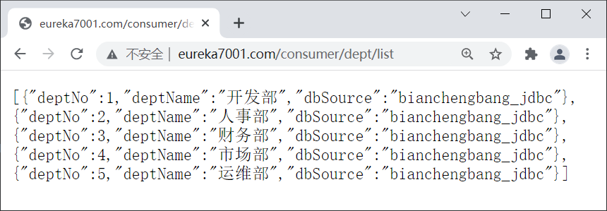
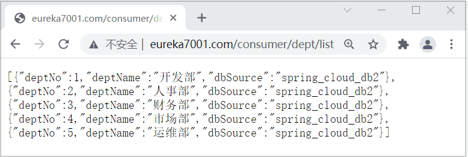
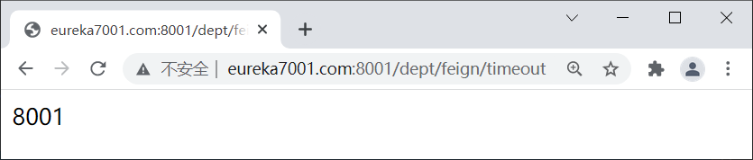
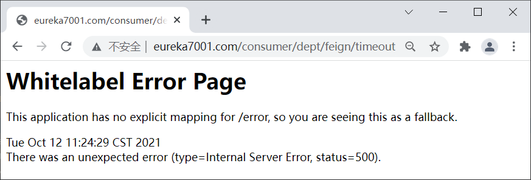
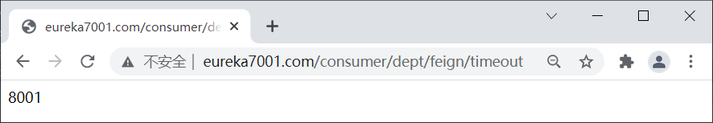

OpenFeign：Spring Cloud声明式服务调用组件（非常详细）
Netflix Feign 是 Netflix 公司发布的一种实现负载均衡和服务调用的开源组件。Spring Cloud 将其与 Netflix 中的其他开源服务组件（例如 Eureka、Ribbon 以及 Hystrix 等）一起整合进 Spring Cloud Netflix 模块中，整合后全称为 Spring Cloud Netflix Feign。
Feign 对 Ribbon 进行了集成，利用 Ribbon 维护了一份可用服务清单，并通过 Ribbon 实现了客户端的负载均衡。
Feign 是一种声明式服务调用组件，它在 RestTemplate 的基础上做了进一步的封装。通过 Feign，我们只需要声明一个接口并通过注解进行简单的配置（类似于 Dao 接口上面的 Mapper 注解一样）即可实现对 HTTP 接口的绑定。
通过 Feign，我们可以像调用本地方法一样来调用远程服务，而完全感觉不到这是在进行远程调用。
Feign 支持多种注解，例如 Feign 自带的注解以及 JAX-RS 注解等，但遗憾的是 Feign 本身并不支持 Spring MVC 注解，这无疑会给广大 Spring 用户带来不便。
2019 年 Netflix 公司宣布 Feign 组件正式进入停更维护状态，于是 Spring 官方便推出了一个名为 OpenFeign 的组件作为 Feign 的替代方案。
OpenFeign 是 Spring Cloud 对 Feign 的二次封装，它具有 Feign 的所有功能，并在 Feign 的基础上增加了对 Spring MVC 注解的支持，例如 @RequestMapping、@GetMapping 和 @PostMapping 等。
1. 在 spring-cloud-demo2 下创建一个名为 micro-service-cloud-consumer-dept-feign 的 Spring Boot 模块，并在 pom.xml 中添加以下依赖。
2. 在 micro-service-cloud-consumer-dept-feign 下的类路径（即 /resources 目录）下，添加一个 application.yml，配置内容如下。
3. 在 net.biancheng.c.service 包下创建一个名为 DeptFeignService 的接口，并在该接口上使用 @FeignClient 注解实现对服务接口的绑定，代码如下。
在编写服务绑定接口时，需要注意以下 2 点：
4. 在 net.biancheng.c.controller 包下，创建一个名为 DeptController_Consumer 的 Controller 类，代码如下。
5. 在主启动类上添加 @EnableFeignClients 注解开启 OpenFeign 功能，代码如下。
Spring Cloud 应用在启动时，OpenFeign 会扫描标有 @FeignClient 注解的接口生成代理，并注人到 Spring 容器中。
6. 依次启动服务注册中心集群、服务提供者以及 micro-service-cloud-consumer-dept-feign，启动完成后，使用浏览器访问“http://eureka7001.com/consumer/dept/list”，结果如下图。
7. 连续多次访问“http://eureka7001.com/consumer/dept/list”，结果如下图。
从图 2 可以看出，由于 OpenFeign 集成了 Ribbon，因此它也实现了客户端的负载均衡，其默认负载均衡策略为轮询策略。
下面我们就通过一个实例，来演示 OpenFeign 是如何进行超时控制的。
1. 在所有的服务提供者（服务端）的 DeptController 中添加一个响应时间为 5 秒的服务，代码如下。
2. 在 micro-service-cloud-consumer-dept-feign 的 DeptFeignService 接口中添加以下代码，绑定服务端刚刚添加的超时服务。
3. 在 micro-service-cloud-consumer-dept-feign 的 DeptController_Consumer 添加以下代码。
4. 重启所有服务提供者，使用浏览器依次访问“http://eureka7001.com:8001/dept/feign/timeout”、“http://eureka7001.com:8002/dept/feign/timeout”和“http://eureka7001.com:8003/dept/feign/timeout”，确保所有服务提供者提供的超时服务都能正常使用，如下图。
5. 重启 micro-service-cloud-consumer-dept-feign，使用浏览器访问“http://eureka7001.com/consumer/dept/feign/timeout”，结果如下图。
6. 在 micro-service-cloud-consumer-dept-feign 的 application.yml 中添加以下配置，将超时时间设置为 6 秒。
Feign 为每一个 FeignClient 都提供了一个 feign.Logger 实例，通过它可以对 OpenFeign 服务绑定接口的调用情况进行监控。
OpenFeign 日志打印功能的开启方式比较简单，下面我们就通过一个实例进行演示。
1. 在 micro-service-cloud-consumer-dept-feign 的 application.yml 中配置以下内容。
以上配置说明如下：
以上配置的含义就是，OpenFeign 以 debug 级别监控 net.biancheng.c.service.DeptFeignService 接口。
2. 在 net.biancheng.c. config 包下创建一个名为 ConfigBean 的配置类，代码如下。
该配置的作用是通过配置的 Logger.Level 对象告诉 OpenFeign 记录哪些日志内容。
Logger.Level 的具体级别如下：
3. 重启 micro-service-cloud-consumer-dept-feign，使用浏览器访问“http://eureka7001.com/consumer/dept/list”，控制台输出如下。
Feign 对 Ribbon 进行了集成，利用 Ribbon 维护了一份可用服务清单，并通过 Ribbon 实现了客户端的负载均衡。
Feign 是一种声明式服务调用组件，它在 RestTemplate 的基础上做了进一步的封装。通过 Feign，我们只需要声明一个接口并通过注解进行简单的配置（类似于 Dao 接口上面的 Mapper 注解一样）即可实现对 HTTP 接口的绑定。
通过 Feign，我们可以像调用本地方法一样来调用远程服务，而完全感觉不到这是在进行远程调用。
Feign 支持多种注解，例如 Feign 自带的注解以及 JAX-RS 注解等，但遗憾的是 Feign 本身并不支持 Spring MVC 注解，这无疑会给广大 Spring 用户带来不便。
2019 年 Netflix 公司宣布 Feign 组件正式进入停更维护状态，于是 Spring 官方便推出了一个名为 OpenFeign 的组件作为 Feign 的替代方案。
OpenFeign
OpenFeign 全称 Spring Cloud OpenFeign，它是 Spring 官方推出的一种声明式服务调用与负载均衡组件，它的出现就是为了替代进入停更维护状态的 Feign。OpenFeign 是 Spring Cloud 对 Feign 的二次封装，它具有 Feign 的所有功能，并在 Feign 的基础上增加了对 Spring MVC 注解的支持，例如 @RequestMapping、@GetMapping 和 @PostMapping 等。
OpenFeign 常用注解
使用 OpenFegin 进行远程服务调用时，常用注解如下表。| 注解 | 说明 |
|---|---|
| @FeignClient | 该注解用于通知 OpenFeign 组件对 @RequestMapping 注解下的接口进行解析，并通过动态代理的方式产生实现类，实现负载均衡和服务调用。 |
| @EnableFeignClients | 该注解用于开启 OpenFeign 功能，当 Spring Cloud 应用启动时，OpenFeign 会扫描标有 @FeignClient 注解的接口，生成代理并注册到 Spring 容器中。 |
| @RequestMapping | Spring MVC 注解，在 Spring MVC 中使用该注解映射请求，通过它来指定控制器（Controller）可以处理哪些 URL 请求，相当于 Servlet 中 web.xml 的配置。 |
| @GetMapping | Spring MVC 注解，用来映射 GET 请求，它是一个组合注解，相当于 @RequestMapping(method = RequestMethod.GET) 。 |
| @PostMapping | Spring MVC 注解，用来映射 POST 请求，它是一个组合注解，相当于 @RequestMapping(method = RequestMethod.POST) 。 |
Spring Cloud Finchley 及以上版本一般使用 OpenFeign 作为其服务调用组件。由于 OpenFeign 是在 2019 年 Feign 停更进入维护后推出的，因此大多数 2019 年及以后的新项目使用的都是 OpenFeign，而 2018 年以前的项目一般使用 Feign。
Feign VS OpenFeign
下面我们就来对比下 Feign 和 OpenFeign 的异同。相同点
Feign 和 OpenFegin 具有以下相同点：- Feign 和 OpenFeign 都是 Spring Cloud 下的远程调用和负载均衡组件。
- Feign 和 OpenFeign 作用一样，都可以实现服务的远程调用和负载均衡。
- Feign 和 OpenFeign 都对 Ribbon 进行了集成，都利用 Ribbon 维护了可用服务清单，并通过 Ribbon 实现了客户端的负载均衡。
- Feign 和 OpenFeign 都是在服务消费者（客户端）定义服务绑定接口并通过注解的方式进行配置，以实现远程服务的调用。
不同点
Feign 和 OpenFeign 具有以下不同：- Feign 和 OpenFeign 的依赖项不同，Feign 的依赖为 spring-cloud-starter-feign，而 OpenFeign 的依赖为 spring-cloud-starter-openfeign。
- Feign 和 OpenFeign 支持的注解不同，Feign 支持 Feign 注解和 JAX-RS 注解，但不支持 Spring MVC 注解；OpenFeign 除了支持 Feign 注解和 JAX-RS 注解外，还支持 Spring MVC 注解。
OpenFeign 实现远程服务调用
下面我们就通过一个实例，来演示下通过 OpenFeign 是如何实现远程服务调用的。1. 在 spring-cloud-demo2 下创建一个名为 micro-service-cloud-consumer-dept-feign 的 Spring Boot 模块，并在 pom.xml 中添加以下依赖。
<?xml version="1.0" encoding="UTF-8"?>
<project xmlns="http://maven.apache.org/POM/4.0.0" xmlns:xsi="http://www.w3.org/2001/XMLSchema-instance"
xsi:schemaLocation="http://maven.apache.org/POM/4.0.0 https://maven.apache.org/xsd/maven-4.0.0.xsd">
<modelVersion>4.0.0</modelVersion>
<parent>
<artifactId>spring-cloud-demo2</artifactId>
<groupId>net.biancheng.c</groupId>
<version>0.0.1-SNAPSHOT</version>
</parent>
<groupId>net.biancheng.c</groupId>
<artifactId>micro-service-cloud-consumer-dept-feign</artifactId>
<version>0.0.1-SNAPSHOT</version>
<name>micro-service-cloud-consumer-dept-feign</name>
<description>Demo project for Spring Boot</description>
<properties>
<java.version>1.8</java.version>
</properties>
<dependencies>
<dependency>
<groupId>net.biancheng.c</groupId>
<artifactId>micro-service-cloud-api</artifactId>
<version>${project.version}</version>
</dependency>
<dependency>
<groupId>org.springframework.boot</groupId>
<artifactId>spring-boot-starter-web</artifactId>
</dependency>
<dependency>
<groupId>org.projectlombok</groupId>
<artifactId>lombok</artifactId>
<optional>true</optional>
</dependency>
<dependency>
<groupId>org.springframework.boot</groupId>
<artifactId>spring-boot-starter-test</artifactId>
<scope>test</scope>
</dependency>
<!--Eureka Client 依赖-->
<dependency>
<groupId>org.springframework.cloud</groupId>
<artifactId>spring-cloud-starter-netflix-eureka-client</artifactId>
</dependency>
<!-- Ribbon 依赖-->
<dependency>
<groupId>org.springframework.cloud</groupId>
<artifactId>spring-cloud-starter-netflix-ribbon</artifactId>
</dependency>
<!--添加 OpenFeign 依赖-->
<dependency>
<groupId>org.springframework.cloud</groupId>
<artifactId>spring-cloud-starter-openfeign</artifactId>
</dependency>
</dependencies>
<build>
<plugins>
<plugin>
<groupId>org.springframework.boot</groupId>
<artifactId>spring-boot-maven-plugin</artifactId>
<configuration>
<excludes>
<exclude>
<groupId>org.projectlombok</groupId>
<artifactId>lombok</artifactId>
</exclude>
</excludes>
</configuration>
</plugin>
</plugins>
</build>
</project>
2. 在 micro-service-cloud-consumer-dept-feign 下的类路径（即 /resources 目录）下，添加一个 application.yml，配置内容如下。
server:
port: 80
eureka:
client:
register-with-eureka: false #服务消费者可以不向服务注册中心注册服务
service-url:
defaultZone: http://eureka7001.com:7001/eureka/,http://eureka7002.com:7002/eureka/,http://eureka7003.com:7003/eureka/
fetch-registry: true #服务消费者客户端需要去检索服务
3. 在 net.biancheng.c.service 包下创建一个名为 DeptFeignService 的接口，并在该接口上使用 @FeignClient 注解实现对服务接口的绑定，代码如下。
package net.biancheng.c.service;
import net.biancheng.c.entity.Dept;
import org.springframework.cloud.openfeign.FeignClient;
import org.springframework.stereotype.Component;
import org.springframework.web.bind.annotation.PathVariable;
import org.springframework.web.bind.annotation.RequestMapping;
import org.springframework.web.bind.annotation.RequestMethod;
import java.util.List;
//添加为容器内的一个组件
@Component
// 服务提供者提供的服务名称，即 application.name
@FeignClient(value = "MICROSERVICECLOUDPROVIDERDEPT")
public interface DeptFeignService {
//对应服务提供者（8001、8002、8003）Controller 中定义的方法
@RequestMapping(value = "/dept/get/{id}", method = RequestMethod.GET)
public Dept get(@PathVariable("id") int id);
@RequestMapping(value = "/dept/list", method = RequestMethod.GET)
public List<Dept> list();
}
在编写服务绑定接口时，需要注意以下 2 点：
- 在 @FeignClient 注解中，value 属性的取值为：服务提供者的服务名，即服务提供者配置文件（application.yml）中 spring.application.name 的取值。
- 接口中定义的每个方法都与服务提供者（即 micro-service-cloud-provider-dept-8001 等）中 Controller 定义的服务方法对应。
4. 在 net.biancheng.c.controller 包下，创建一个名为 DeptController_Consumer 的 Controller 类，代码如下。
package net.biancheng.c.controller;
import net.biancheng.c.entity.Dept;
import net.biancheng.c.service.DeptFeignService;
import org.springframework.web.bind.annotation.PathVariable;
import org.springframework.web.bind.annotation.RequestMapping;
import org.springframework.web.bind.annotation.RestController;
import javax.annotation.Resource;
import java.util.List;
@RestController
public class DeptController_Consumer {
@Resource
private DeptFeignService deptFeignService;
@RequestMapping(value = "/consumer/dept/get/{id}")
public Dept get(@PathVariable("id") Integer id) {
return deptFeignService.get(id);
}
@RequestMapping(value = "/consumer/dept/list")
public List<Dept> list() {
return deptFeignService.list();
}
}
5. 在主启动类上添加 @EnableFeignClients 注解开启 OpenFeign 功能，代码如下。
package net.biancheng.c;
import org.springframework.boot.SpringApplication;
import org.springframework.boot.autoconfigure.SpringBootApplication;
import org.springframework.cloud.openfeign.EnableFeignClients;
@SpringBootApplication
@EnableFeignClients //开启 OpenFeign 功能
public class MicroServiceCloudConsumerDeptFeignApplication {
public static void main(String[] args) {
SpringApplication.run(MicroServiceCloudConsumerDeptFeignApplication.class, args);
}
}
Spring Cloud 应用在启动时，OpenFeign 会扫描标有 @FeignClient 注解的接口生成代理，并注人到 Spring 容器中。
6. 依次启动服务注册中心集群、服务提供者以及 micro-service-cloud-consumer-dept-feign，启动完成后，使用浏览器访问“http://eureka7001.com/consumer/dept/list”，结果如下图。

图1：OpenFeign 实现远程服务调用
图1：OpenFeign 实现远程服务调用
7. 连续多次访问“http://eureka7001.com/consumer/dept/list”，结果如下图。

图2：OpenFeign 负载均衡
图2：OpenFeign 负载均衡
从图 2 可以看出，由于 OpenFeign 集成了 Ribbon，因此它也实现了客户端的负载均衡，其默认负载均衡策略为轮询策略。
OpenFeign 超时控制
OpenFeign 客户端的默认超时时间为 1 秒钟，如果服务端处理请求的时间超过 1 秒就会报错。为了避免这样的情况，我们需要对 OpenFeign 客户端的超时时间进行控制。下面我们就通过一个实例，来演示 OpenFeign 是如何进行超时控制的。
1. 在所有的服务提供者（服务端）的 DeptController 中添加一个响应时间为 5 秒的服务，代码如下。
//超时测试,该服务的响应时间为 5 秒
@RequestMapping(value = "/dept/feign/timeout")
public String DeptFeignTimeout() {
//暂停 5 秒
try {
TimeUnit.SECONDS.sleep(5);
} catch (InterruptedException e) {
e.printStackTrace();
}
return serverPort;
}
2. 在 micro-service-cloud-consumer-dept-feign 的 DeptFeignService 接口中添加以下代码，绑定服务端刚刚添加的超时服务。
@RequestMapping(value = "/dept/feign/timeout") public String DeptFeignTimeout();
3. 在 micro-service-cloud-consumer-dept-feign 的 DeptController_Consumer 添加以下代码。
@RequestMapping(value = "/consumer/dept/feign/timeout")
public String DeptFeignTimeout() {
// openFeign-ribbon 客户端一般默认等待一秒钟，超过该时间就会报错
return deptFeignService.DeptFeignTimeout();
}
4. 重启所有服务提供者，使用浏览器依次访问“http://eureka7001.com:8001/dept/feign/timeout”、“http://eureka7001.com:8002/dept/feign/timeout”和“http://eureka7001.com:8003/dept/feign/timeout”，确保所有服务提供者提供的超时服务都能正常使用，如下图。

图3：服务提供者的超时服务
图3：服务提供者的超时服务
5. 重启 micro-service-cloud-consumer-dept-feign，使用浏览器访问“http://eureka7001.com/consumer/dept/feign/timeout”，结果如下图。

图4：OpenFeign 超时报错
图4：OpenFeign 超时报错
6. 在 micro-service-cloud-consumer-dept-feign 的 application.yml 中添加以下配置，将超时时间设置为 6 秒。
ribbon: ReadTimeout: 6000 #建立连接所用的时间，适用于网络状况正常的情况下，两端两端连接所用的时间 ConnectionTimeout: 6000 #建立连接后，服务器读取到可用资源的时间
7. 再次重启 micro-service-cloud-consumer-dept-feign，使用浏览器访问“http://eureka7001.com/consumer/dept/feign/timeout”，结果如下图。注：由于 OpenFeign 集成了 Ribbon ，其服务调用以及负载均衡在底层都是依靠 Ribbon 实现的，因此 OpenFeign 超时控制也是通过 Ribbon 来实现的。

图5：OpenFeign 超时控制
图5：OpenFeign 超时控制
OpenFeign 日志增强
OpenFeign 提供了日志打印功能，我们可以通过配置调整日志级别，来了解请求的细节。Feign 为每一个 FeignClient 都提供了一个 feign.Logger 实例，通过它可以对 OpenFeign 服务绑定接口的调用情况进行监控。
OpenFeign 日志打印功能的开启方式比较简单，下面我们就通过一个实例进行演示。
1. 在 micro-service-cloud-consumer-dept-feign 的 application.yml 中配置以下内容。
logging:
level:
#feign 日志以什么样的级别监控该接口
net.biancheng.c.service.DeptFeignService: debug
以上配置说明如下：
- net.biancheng.c.service.DeptFeignService 是开启 @FeignClient 注解的接口（即服务绑定接口）的完整类名。也可以只配置部分路径，表示监控该路径下的所有服务绑定接口
- debug：表示监听该接口的日志级别。
以上配置的含义就是，OpenFeign 以 debug 级别监控 net.biancheng.c.service.DeptFeignService 接口。
2. 在 net.biancheng.c. config 包下创建一个名为 ConfigBean 的配置类，代码如下。
package net.biancheng.c.config;
import feign.Logger;
import org.springframework.context.annotation.Bean;
import org.springframework.context.annotation.Configuration;
@Configuration
public class ConfigBean {
/**
* OpenFeign 日志增强
* 配置 OpenFeign 记录哪些内容
*/
@Bean
Logger.Level feginLoggerLevel() {
return Logger.Level.FULL;
}
}
该配置的作用是通过配置的 Logger.Level 对象告诉 OpenFeign 记录哪些日志内容。
Logger.Level 的具体级别如下：
- NONE：不记录任何信息。
- BASIC：仅记录请求方法、URL 以及响应状态码和执行时间。
- HEADERS：除了记录 BASIC 级别的信息外，还会记录请求和响应的头信息。
- FULL：记录所有请求与响应的明细，包括头信息、请求体、元数据等等。
3. 重启 micro-service-cloud-consumer-dept-feign，使用浏览器访问“http://eureka7001.com/consumer/dept/list”，控制台输出如下。
2021-10-12 14:33:07.408 DEBUG 13388 --- [p-nio-80-exec-2] n.biancheng.c.service.DeptFeignService : [DeptFeignService#list] ---> GET http://MICROSERVICECLOUDPROVIDERDEPT/dept/list HTTP/1.1
2021-10-12 14:33:07.408 DEBUG 13388 --- [p-nio-80-exec-2] n.biancheng.c.service.DeptFeignService : [DeptFeignService#list] ---> END HTTP (0-byte body)
2021-10-12 14:33:07.983 DEBUG 13388 --- [p-nio-80-exec-2] n.biancheng.c.service.DeptFeignService : [DeptFeignService#list] <--- HTTP/1.1 200 (574ms)
2021-10-12 14:33:07.983 DEBUG 13388 --- [p-nio-80-exec-2] n.biancheng.c.service.DeptFeignService : [DeptFeignService#list] connection: keep-alive
2021-10-12 14:33:07.983 DEBUG 13388 --- [p-nio-80-exec-2] n.biancheng.c.service.DeptFeignService : [DeptFeignService#list] content-type: application/json
2021-10-12 14:33:07.983 DEBUG 13388 --- [p-nio-80-exec-2] n.biancheng.c.service.DeptFeignService : [DeptFeignService#list] date: Tue, 12 Oct 2021 06:33:07 GMT
2021-10-12 14:33:07.983 DEBUG 13388 --- [p-nio-80-exec-2] n.biancheng.c.service.DeptFeignService : [DeptFeignService#list] keep-alive: timeout=60
2021-10-12 14:33:07.983 DEBUG 13388 --- [p-nio-80-exec-2] n.biancheng.c.service.DeptFeignService : [DeptFeignService#list] transfer-encoding: chunked
2021-10-12 14:33:07.983 DEBUG 13388 --- [p-nio-80-exec-2] n.biancheng.c.service.DeptFeignService : [DeptFeignService#list]
2021-10-12 14:33:07.991 DEBUG 13388 --- [p-nio-80-exec-2] n.biancheng.c.service.DeptFeignService : [DeptFeignService#list] [{"deptNo":1,"deptName":"开发部","dbSource":"bianchengbang_jdbc"},{"deptNo":2,"deptName":"人事部","dbSource":"bianchengbang_jdbc"},{"deptNo":3,"deptName":"财务部","dbSource":"bianchengbang_jdbc"},{"deptNo":4,"deptName":"市场部","dbSource":"bianchengbang_jdbc"},{"deptNo":5,"deptName":"运维部","dbSource":"bianchengbang_jdbc"}]
2021-10-12 14:33:07.991 DEBUG 13388 --- [p-nio-80-exec-2] n.biancheng.c.service.DeptFeignService : [DeptFeignService#list] <--- END HTTP (341-byte body)
关注公众号「站长严长生」，在手机上阅读所有教程，随时随地都能学习。内含一款搜索神器，免费下载全网书籍和视频。

微信扫码关注公众号